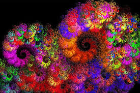
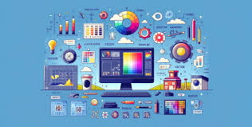
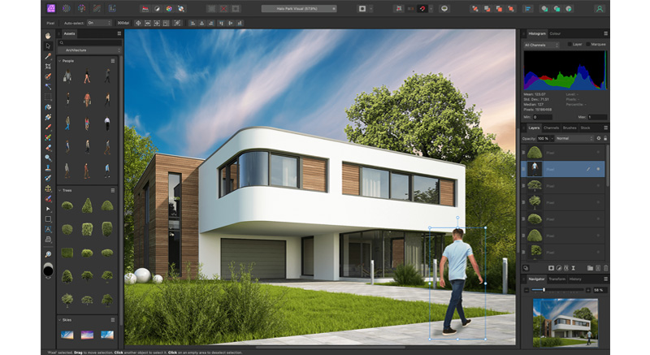
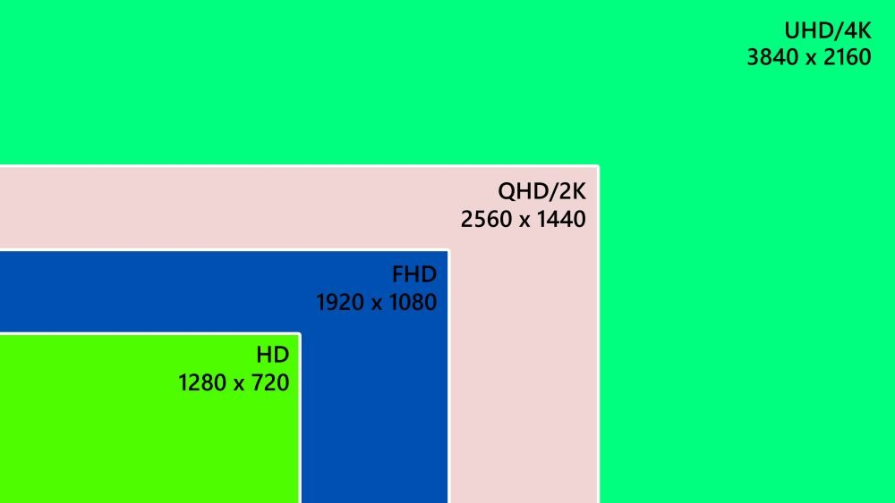
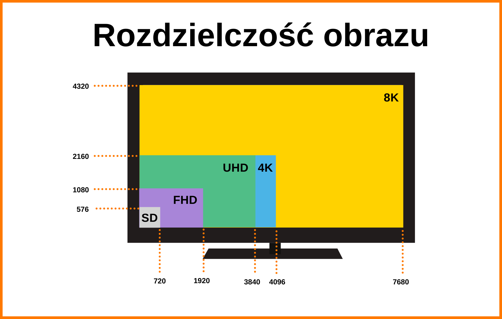
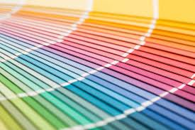
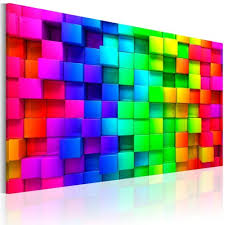
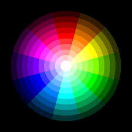
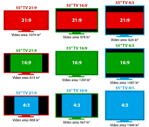
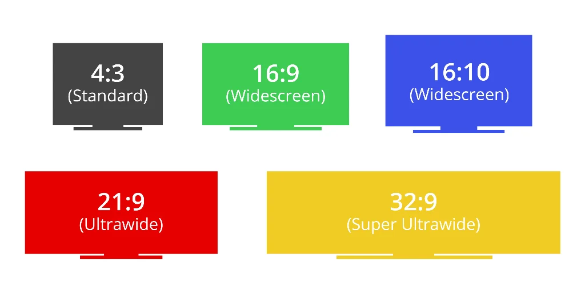

Wprowadzenie do Grafiki Komputerowej
Grafika komputerowa to dziedzina zajmująca się tworzeniem, edytowaniem i wyświetlaniem obrazów cyfrowych. Wykorzystywana jest w różnych branżach, takich jak fotografia, reklama, gry komputerowe, filmy animowane czy projektowanie stron internetowych.


Podstawowe Rodzaje Grafiki Komputerowej
- Grafika rastrowa – obrazy składające się z pikseli, stosowane głównie w fotografii cyfrowej.
- Grafika wektorowa – oparta na matematycznych krzywych i figurach, używana w logotypach i ilustracjach.
- Grafika trójymiarowa – tworzenie trójwymiarowych modeli i animacji w grach oraz filmach.
- Grafika komputerowa – generowanie ruchomych obrazów na potrzeby filmów, reklam i efektów specjalnych.

Zastosowanie Grafiki Komputerowej
Grafika komputerowa ma szerokie zastosowanie w różnych branżach:
- Fotografia cyfrowa – edycja zdjęć w programach takich jak Photoshop czy GIMP.
- Projektowanie graficzne – tworzenie plakatów, ulotek, logotypów i interfejsów.
- Tworzenie gier – modelowanie postaci i światów w grach komputerowych.
- Produkcja filmowa – efekty specjalne i animacje 3D w filmach i reklamach.
- Web design – projektowanie stron internetowych i interfejsów użytkownika.
Najpopularniejsze Format Plików
- JPEG – najlepszy do zdjęć, używa stratnej kompresji.
- PNG – obsługuje przezroczystość, bezstratna jakość.
- SVG – format grafiki wektorowej używany na stronach internetowych.
- GIF – stosowany do prostych animacji.
- TIFF – format wysokiej jakości dla druku.
Popularne Programy Graficzne
- Adobe Photoshop – profesjonalna edycja zdjęć.
- Adobe Illustrator – tworzenie grafiki wektorowej.
- GIMP – darmowy edytor grafiki rastrowej.
- Blender – modelowanie i animacja 3D.
- CorelDRAW – wektorowe projektowanie graficzne.


Rozdzielczość
- SD (Standard Definition): 720 × 480 (NTSC) / 720 × 576 (PAL)
- HD (High Definition): 1280 × 720 (720p)
- Full HD (FHD): 1920 × 1080 (1080p)
- Quad HD (QHD): 2560 × 1440 (1440p)
- 4K Ultra HD (UHD): 3840 × 2160 (2160p)
- 8K Ultra HD (UHD): 7680 × 4320


1-bit (2 kolory) – czarno-biały (monochromatyczny)
2-bit (4 kolory) – np. stare systemy graficzne (CGA)
4-bit (16 kolorów) – stosowane w EGA i niektórych trybach VGA
8-bit (256 kolorów) – paleta VGA, GIF, retro gry
16-bit (High Color, 65 536 kolorów) – używane w starszych systemach Windows, SNES
24-bit (True Color, 16,7 mln kolorów) – standard w dzisiejszych ekranach i obrazach JPG
32-bit (True Color + kanał alfa) – 16,7 mln kolorów + przezroczystość (kanał alfa)
4:3 – klasyczne monitory CRT, telewizory SD (np. 1024 × 768, 1600 × 1200)
16:9 – najpopularniejszy format Full HD, 4K (np. 1920 × 1080, 3840 × 2160)
16:10 – nieco wyższy niż 16:9, stosowany w niektórych laptopach (np. 1920 × 1200)
21:9 – monitory ultrapanoramiczne, szerokie filmy kinowe (np. 3440 × 1440)
32:9 – super-ultrapanoramiczne monitory gamingowe (np. 5120 × 1440)
18:9 (2:1) – stosowane w niektórych smartfonach
19.5:9 – popularny format w nowoczesnych smartfonach (np. iPhone X i nowsze)
20:9 – coraz częściej używane w telefonach z większym ekranem
5:4 – stare monitory LCD (np. 1280 × 1024)
3:2 – Microsoft Surface, niektóre laptopy Google Pixel
1:1 – kwadratowe ekrany (np. smartwatche)
Palety kolorów
- RGB (Red, Green, Blue) – używana w ekranach i cyfrowych grafikach
- MYK (Cyan, Magenta, Yellow, Black) – stosowana w druku
- HSV (Hue, Saturation, Value) – model kolorów oparty na odcieniu, nasyceniu i jasności
- HSL (Hue, Saturation, Lightness) – podobny do HSV, ale z inną interpretacją jasności
- LAB model kolorów bazujący na percepcji ludzkiego oka


Głębie Kolorów


Proporcje Ekranu

